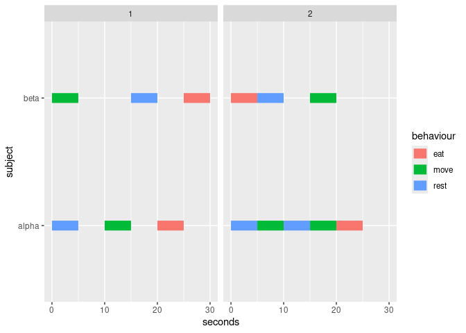
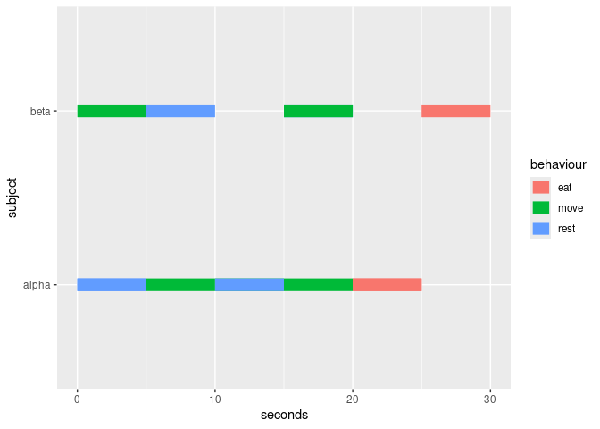
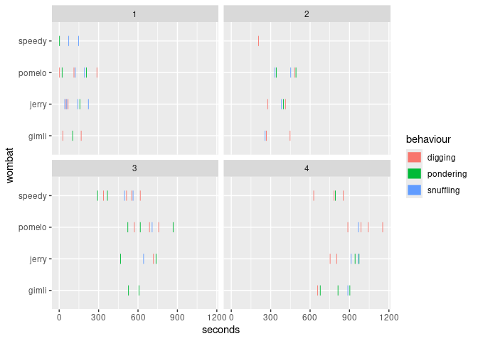
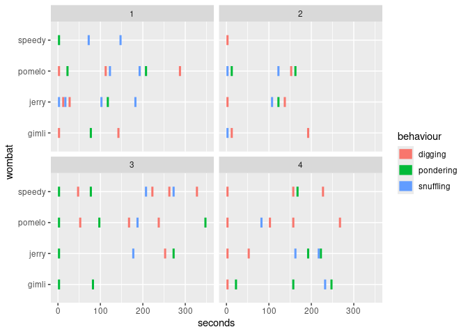

The goal of ggethos is to provide a user-frienldy way to plot ethograms using ggplot2.
Installation
At this point, this is an experimental package, and you can only install the development version from GitHub with:
# install.packages("devtools")
devtools::install_github("matiasandina/ggethos")Once it’s on CRAN, you can install the released version of ggethos from CRAN with:
install.packages("ggethos")And the development version from GitHub with:
# install.packages("devtools")
devtools::install_github("matiasandina/ggethos")Example
There are two supported workflows:
-
geom_ethogram()computes ethogram segments for you (quick start). -
compute_*()lets you precompute segments for debugging or further analysis.
Quick start (stat computes)
ethogram_demo is a small deterministic dataset designed to make outputs easy to verify.
ggplot(ethogram_demo,
aes(x = seconds, y = subject, behaviour = behaviour, colour = behaviour)) +
geom_ethogram() +
facet_wrap(~ trial)
Precompute segments (pipeline)
When you precompute segments, geom_ethogram(stat = "identity") will draw them without recomputing. The computed data keeps the original column names and adds *_end columns plus mapping metadata.
seg <- compute_samples(ethogram_demo,
x = seconds,
y = subject,
behaviour = behaviour,
interval = 5)
ggplot() +
geom_ethogram(data = seg, aes(colour = behaviour), stat = "identity")
Realistic dataset (wombats)
wombats is a larger, more variable dataset with multiple trials.
ggplot(wombats, aes(x = seconds, y = wombat, behaviour = behaviour, color = behaviour)) +
geom_ethogram() +
facet_wrap(~ trial)
ggplot(wombats, aes(x = seconds, y = wombat, behaviour = behaviour, color = behaviour)) +
geom_ethogram(align_trials = TRUE) +
facet_wrap(~ trial)
Issues
This is a preliminary release and the package is still very much experimental. Please file issues to improve it.